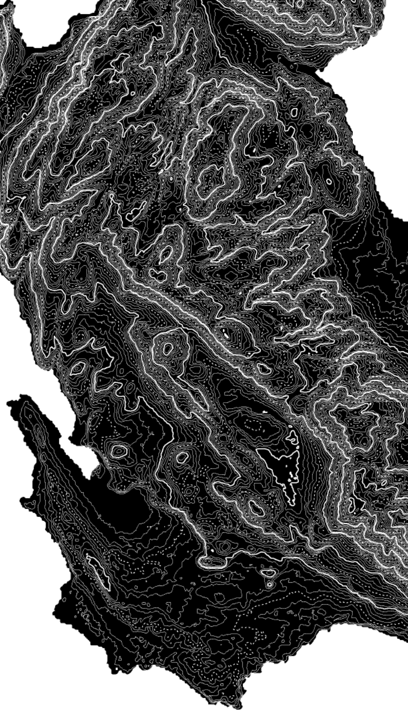
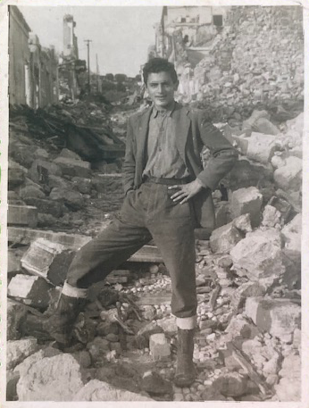
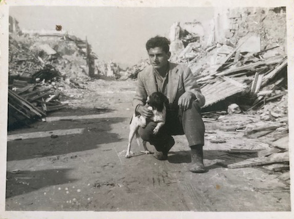
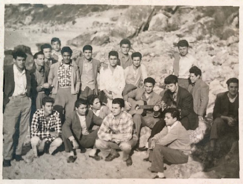
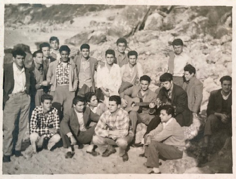

Κεφαλονιά
Kefalonia
Οι ζωντανές ιστορίες είναι ένα ερευνητικό έργο σχεδιασμού που απασχόλησε μέλη της κοινότητας στην Κεφαλονιά και καθηγητές και φοιτητές από τη Σχολή Αργοστολίου: «Παναγιώτης Βεργώτης».
Στόχος μας είναι να αναπτύξουμε ένα εκπαιδευτικό ερευνητικό πλαίσιο για τη δέσμευση της κοινότητας με τις τοπικές ιστορίες προς τη διατήρηση της πολιτιστικής κληρονομιάς και τον κοινοτικό διάλογο.
Στόχος μας είναι να αναπτύξουμε ένα εκπαιδευτικό ερευνητικό πλαίσιο για τη δέσμευση της κοινότητας με τις τοπικές ιστορίες προς τη διατήρηση της πολιτιστικής κληρονομιάς και τον κοινοτικό διάλογο.
Living Histories is a design research project that engages community members in Kefalonia and faculty and students from the School of Argostoli: “Panagiotis Vergotis”.
Our aim is to develop an educational research framework for community engagement with local histories toward heritage preservation and community dialogue.
Our aim is to develop an educational research framework for community engagement with local histories toward heritage preservation and community dialogue.




Η Κεφαλονιά είναι ένα ελληνικό νησί στο Ιόνιο Πέλαγος με πλούσια ιστορία που επιβιώνει μέσα από τους ανθρώπους και τις πρακτικές του. Κατά τη διάρκεια των δεκαετιών του 1940 και του 1950, πολλές προκλήσεις επηρέασαν τη ζωή στο νησί. Ο Β' Παγκόσμιος Πόλεμος έφερε σημαντικές διαμάχες καθώς η γερμανική κατοχή είχε ως αποτέλεσμα καταστροφικούς θανάτους, πείνα και οικονομικό πληθωρισμό. Επιπλέον, η αυξανόμενη ένταση μεταξύ κομμουνιστικών και βασιλικών ομάδων ξέσπασε τελικά στον ελληνικό εμφύλιο πόλεμο, ο οποίος ανάγκασε πολλούς να εγκαταλείψουν τα σπίτια τους.
Kefalonia is a Greek island in the Ionian Sea with a rich history that survives through its people and practices. Over the course of the 1940s and 50s, numerous challenges impacted life on the island. World War II brought significant strife as the German occupation resulted in catastrophic death, famine, and economic inflation. Moreover, rising tension between Communist and Royalist groups eventually erupted into the Greek Civil War, which forced many to leave their homes.
Kefalonia is a Greek island in the Ionian Sea with a rich history that survives through its people and practices. Over the course of the 1940s and 50s, numerous challenges impacted life on the island. World War II brought significant strife as the German occupation resulted in catastrophic death, famine, and economic inflation. Moreover, rising tension between Communist and Royalist groups eventually erupted into the Greek Civil War, which forced many to leave their homes.
Μετά από μια δεκαετία αναταραχών και απωλειών, ο σεισμός των 7,2 Ρίχτερ του 1953 άφησε πάνω από το 85% των κτιρίων ακατοίκητα και εκτόπισε χιλιάδες. Οι επακόλουθες καταστροφές ανάγκασαν πολλούς να ξαναχτίσουν τα σπίτια τους και να ξαναφτιάξουν τη ζωή τους. Ο σεισμός επιδείνωσε τα μύρια ζητήματα που αντιμετώπιζε η Κεφαλονιά και οδήγησε πολλούς άλλους να εγκαταλείψουν το νησί αναζητώντας ανακούφιση και ευκαιρίες. Αυτή η διασπορά είχε ως αποτέλεσμα τη διάβρωση των κοινωνικών και πολιτιστικών δομών.
After a decade of turmoil and loss, the 7.2 magnitude earthquake of 1953 left more than 85% of buildings uninhabitable and displaced thousands. Subsequent devastation forced many to rebuild their homes and reconstruct their lives. The earthquake exacerbated the myriad of issues that Kefalonia was facing and led many more to flee the island in search of relief and opportunity. This diaspora resulted in the erosion of social and cultural structures.
After a decade of turmoil and loss, the 7.2 magnitude earthquake of 1953 left more than 85% of buildings uninhabitable and displaced thousands. Subsequent devastation forced many to rebuild their homes and reconstruct their lives. The earthquake exacerbated the myriad of issues that Kefalonia was facing and led many more to flee the island in search of relief and opportunity. This diaspora resulted in the erosion of social and cultural structures.
ζωντανές ιστορίες έργο αναδεικνύει τις εμπειρίες και την ανθεκτικότητα των Κεφαλονιτών καθώς έχουν αντέξει αυτή τη σειρά δυσκολιών. Στόχος μας είναι να συγκεντρώσουμε μια καταγραφή προοπτικών από αυτούς που επηρεάστηκαν από αυτές τις κακουχίες για να παρέχουμε μια αφηγηματική ιστορία της Κεφαλονιάς εκτός από την αναζωογόνηση των τοπικών και πολιτιστικών πρακτικών. Οι συνεντευξιαζόμενοι που παρουσιάζονται σε αυτό το έργο συνεισφέρουν σε μια συλλογή αφηγήσεων από πρώτο χέρι που διατηρούν τις παραδόσεις του νησιού και τους επιτρέπουν να ζήσουν για τις μελλοντικές γενιές.
The project highlights the experiences and resilience of the Kefalonian people as they have endured this series of difficulties. Our goal is to gather a record of perspectives from those impacted by these hardships to provide a narrative history of Kefalonia in addition to revitalizing local and cultural practices. The interviewees featured in this project contribute to a collection of firsthand accounts that preserve the island’s traditions and allow them to live on for future generations.
The project highlights the experiences and resilience of the Kefalonian people as they have endured this series of difficulties. Our goal is to gather a record of perspectives from those impacted by these hardships to provide a narrative history of Kefalonia in addition to revitalizing local and cultural practices. The interviewees featured in this project contribute to a collection of firsthand accounts that preserve the island’s traditions and allow them to live on for future generations.
Το φως έρχεται μέσα από τα παράθυρα της κουζίνας του Μπάμπη.
Family photographs from Babis Goulimis.
Family photographs from Babis Goulimis.

 

About Kefalonia
Σχετικά με την Κεφαλονιά
Ανταρτοεπονίτες της υποδειγματικής ομάδας-διμοιρίας της ΙΙας Μεραρχίας του ΕΛΑΣ. Πάρνηθα.
Partisans of the exemplary group-division of the 2nd Division of ELAS. Parnitha.
Partisans of the exemplary group-division of the 2nd Division of ELAS. Parnitha.
Η Διεθνής Επιτροπή Ερυθρού Σταυρού οργάνωσε ενα κέντρο
φροντίδας για τα παιδιά που είχαν πληγεί απο το σεισμό. Ζάκυνθος 1953.
The ICRC set up a daycare center for children that were impacted by the earthquake. Zakynthos 1953.
The ICRC set up a daycare center for children that were impacted by the earthquake. Zakynthos 1953.
Οικογένεια Χουρμούζη.
Hourmouzis family.
Hourmouzis family.
Ο Σπύρος στέκεται στα συντρίμμια του σεισμού.
Spiros Hourmouzis stands in the rubble of the earthquake.
Spiros Hourmouzis stands in the rubble of the earthquake.
ζωντανές ιστορίες επιμελείται μια ομάδα μαθητών
και καθηγητές στο κρατικό πανεπιστήμιο NC
Living Histories is curated by a team of students
and professors at the University of NC State.
και καθηγητές στο κρατικό πανεπιστήμιο NC
Living Histories is curated by a team of students
and professors at the University of NC State.
More about us
Περισσότερα για εμάς